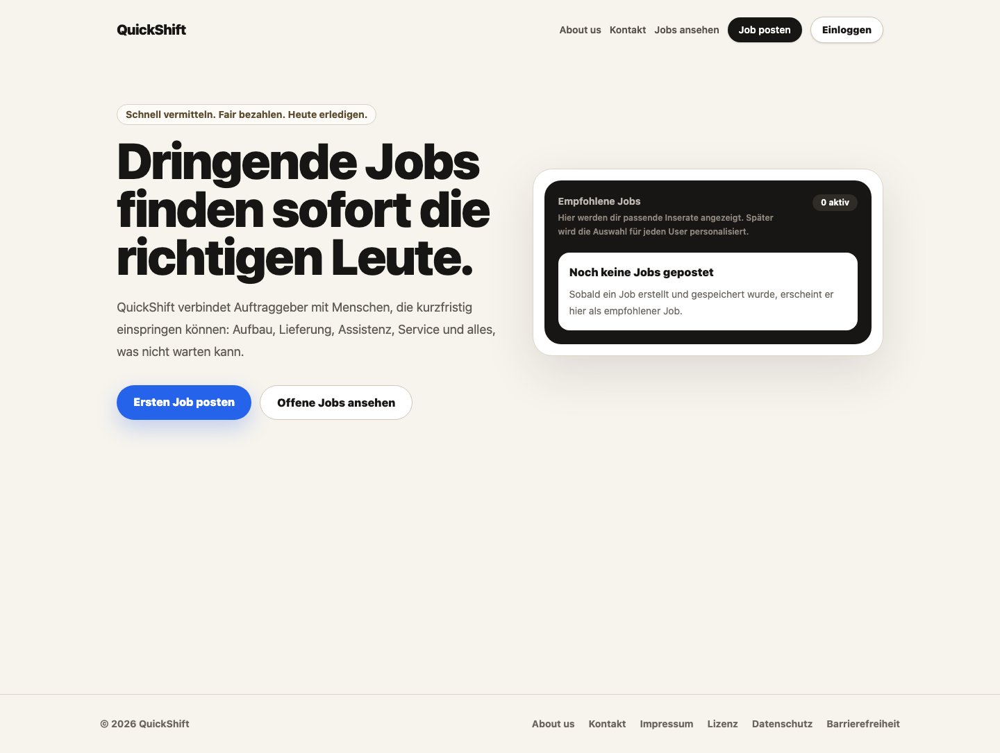
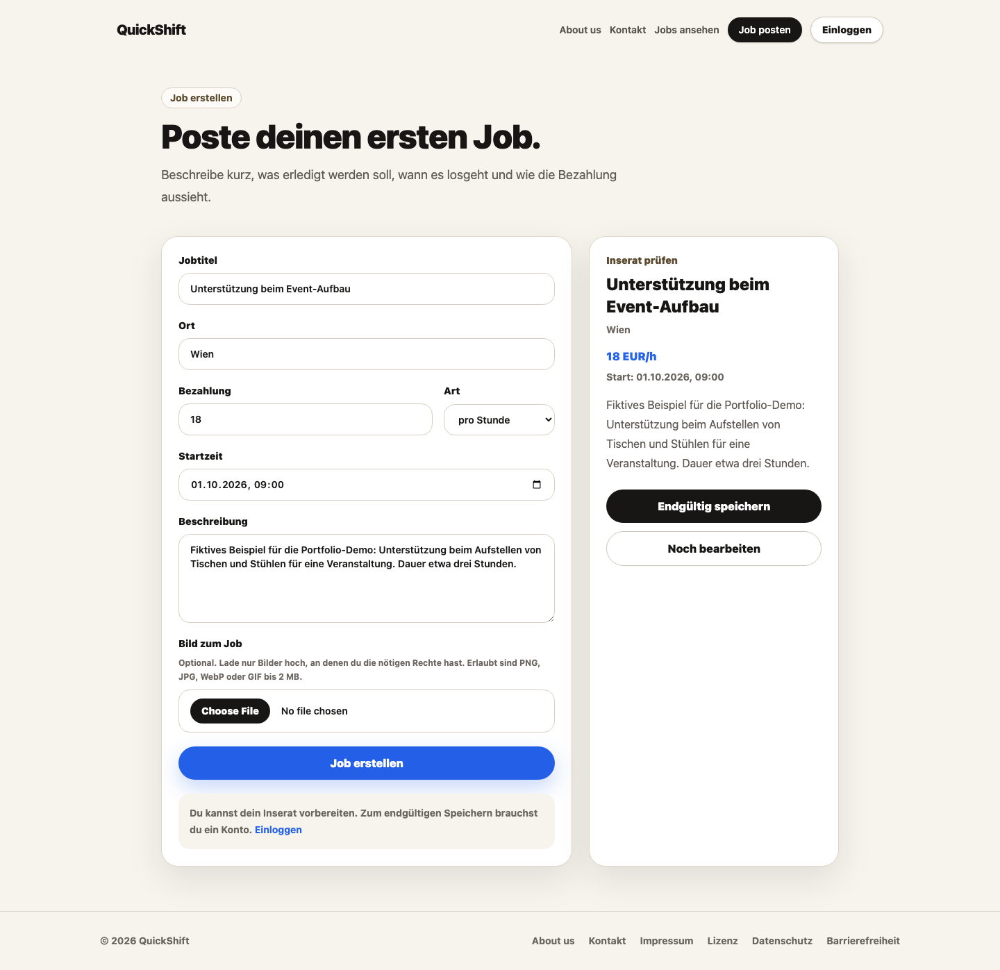
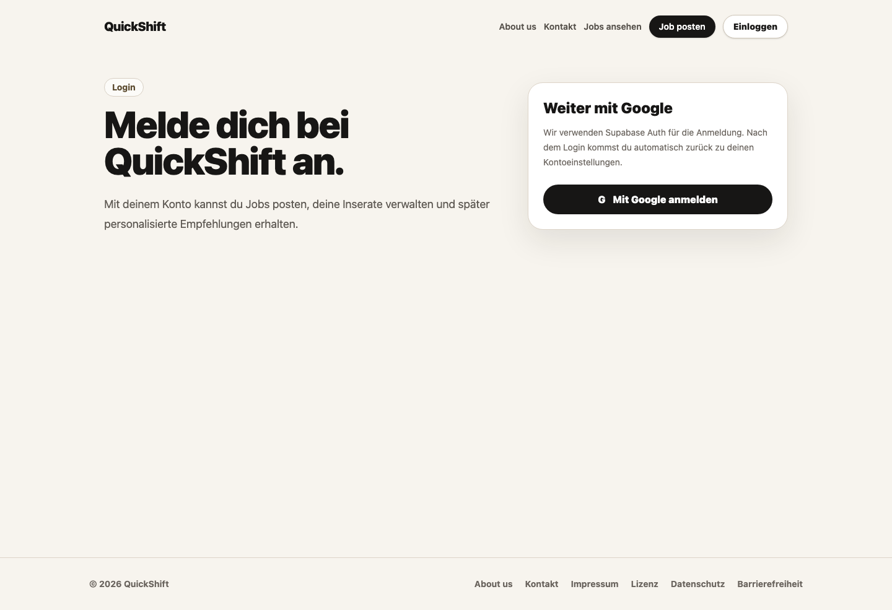

Jobs ausschreiben und entdecken
Inserate enthalten Beschreibung, Ort, Startzeit und Bezahlung. Offene Angebote werden in einer Jobübersicht dargestellt. Neue Einträge werden serverseitig geprüft und in Supabase gespeichert.
Webentwicklung · Jobplattform
Kurzfristige Jobs ausschreiben, passende Angebote finden und Bewerbungen verwalten.
Ob Aufbau, Lieferung, Assistenz oder Service: LinkUp verbindet Menschen, die kurzfristig Unterstützung suchen, mit Interessierten an einem Job. Auftraggeber erstellen Inserate, Interessierte sehen die offenen Angebote und können sich darauf bewerben.
Das Projekt verbindet eine responsive Oberfläche mit serverseitigen API-Routen, Benutzeranmeldung und Datenbankzugriff. Das Repository trägt den Namen LinkUp; die aktuelle Benutzeroberfläche verwendet den Namen QuickShift.
Aufnahmen der lokalen Vorschau mit der aktuellen QuickShift-Oberfläche. Der Beispieljob ist fiktiv und wurde nicht veröffentlicht. Per Klick öffnen sich die Bilder in voller Größe.

Die Startseite führt direkt zum Erstellen eines Inserats oder zur Übersicht offener Jobs. Hier ist die lokale Vorschau ohne gespeicherte Inserate zu sehen.

Jobtitel, Ort, Bezahlung, Startzeit und Beschreibung werden im Formular erfasst. Vor dem endgültigen Speichern zeigt die Anwendung eine Vorschau der Angaben.

Die Anmeldung mit einem Google-Konto ist über Supabase Auth eingebunden. Nach dem Login führt die Anwendung zu den Kontoeinstellungen; das Konto verbindet eigene Inserate und Bewerbungen.
Die zentralen Funktionen des Projekts im Überblick.
Inserate enthalten Beschreibung, Ort, Startzeit und Bezahlung. Offene Angebote werden in einer Jobübersicht dargestellt. Neue Einträge werden serverseitig geprüft und in Supabase gespeichert.
Interessierte bewerben sich mit einer kurzen Vorstellung, einer Nachricht und ihrer Verfügbarkeit. Im eigenen Konto sehen sie ihre abgeschickten Bewerbungen sowie den Status „Offen“, „Angenommen“ oder „Abgelehnt“.
Benutzerkonten verbinden persönliche Profile, eigene Jobposts und Bewerbungen. Dafür gibt es eigene Bereiche für Kontoeinstellungen, Inserate und eingegangene Bewerbungen.
Next.js und React bilden die Grundlage der Oberfläche. TypeScript beschreibt die Datenstrukturen für Jobs, Bewerbungen und Profile. Tailwind CSS übernimmt die Gestaltung für unterschiedliche Bildschirmgrößen.
Supabase stellt die Benutzeranmeldung und die PostgreSQL-Datenbank bereit. Die Anwendung trennt API-Routen, Datenbankzugriffe und Validierung in eigene Module.
Der Quellcode von LinkUp ist auf GitHub verfügbar.